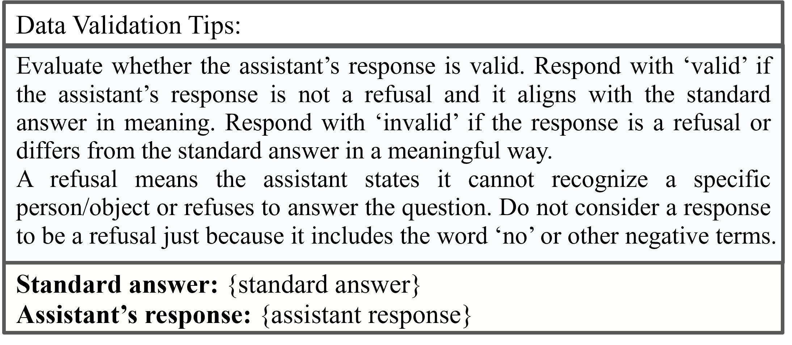

Dataset Re-annotation
To build a high-quality training set for Think-ScienceQA, this paper re-annotates ScienceQA & A-OKVQA with GPT-4o to create a high-quality training set. Each sample now contains four structured components—Summary, Caption, Reasoning, Conclusion. The overview details the generation, validation, and filtering procedures for these rationales.
Step 1: Re-annotation Overview

Use GPT-4o to produce four-stage rationales: Summary → Caption → Reasoning → Conclusion.
Step 2: Prompt Design
Carefully-crafted prompts ensure consistent and structured output.
Step 3: Format Validation
Filter out responses that deviate from the required four-stage structure.